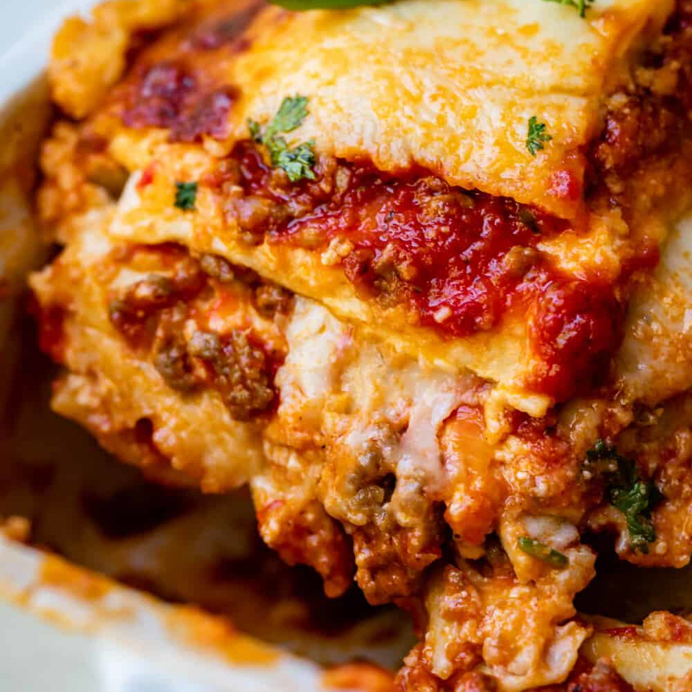

Lasagna

While there are a few steps to this lasagna recipe, it’s easy to make and has so much flavor. This dish can be made ahead of time and freezes well either before or after baking!
INGREDIENTS
YIELD: 12 Servings
BASE GOODIES
- 12 lasagna noodles, uncooked
- 4 cups mozerella cheese shredded and divided
- 1/2 cup parmesan cheese shredded and divided
TOMATO SAUCE
- ½ pound lean ground beef
- ½ pound italian sausage
- 1 onion diced
- 2 cloves garlic minced
- 36 ounces pasta sauce
- 2 tablespoons tomato paste
- 1 teaspoon italian seasoning
CHEESE MIXTURE
- 2 cups ricotta cheese
- ¼ cup fresh parsley chopped
- 1 egg beaten
PREPARATION
- Preheat the oven to 350°F. In a large pot of salted water, boil lasagna noodles until al dente according to package directions. Drain, rinse under cold water, and set aside.
- In a large skillet or dutch oven, brown beef, sausage, onion, and garlic over medium-high heat until no pink remains. Drain any fat.
- Stir in the pasta sauce, tomato paste, Italian seasoning, ½ teaspoon of salt, and ¼ teaspoon of black pepper. Simmer uncovered over medium heat for 5 minutes or until thickened.
- In a separate bowl, combine 1 ½ cups mozzarella, ¼ cup parmesan cheese, ricotta, parsley, egg, and ¼ teaspoon salt.
- Spread 1 cup of the meat sauce in a 9×13 pan or casserole dish. Top it with 3 lasagna noodles. Layer with ⅓ of the ricotta cheese mixture and 1 cup of meat sauce. Repeat twice more. Finish with 3 noodles topped with remaining sauce.
- Cover with foil and bake for 45 minutes.
- Remove the foil and sprinkle with the remaining 2 ½ cups mozzarella cheese and ¼ cup parmesan cheese. Bake for an additional 15 minutes or until browned and bubbly. Broil for 2-3 minutes if desired.
- Rest for at least 15 minutes before cutting.
Notes:
- *Note on the sauce: In this recipe, each layer has about 1 cup of meat sauce. If you prefer more sauce in your lasagna, increase the pasta sauce to 48 oz. Salt needed may vary based on the brand of pasta sauce used. Taste and season after simmering.
- *Cheese Layer: The cheese layers are thin; if you'd prefer a thcker layer of cheese, divide the cheese in half and put on the first two layers, and add just meat sauce to the third later. We did this test with extra ricotta cheese and found it overpowered the lasagna.
- Time-Saving Tip: Use fresh lasagna sheets found in the deli area and skip the boiling step. Fresh lasagna doesn't need to be boiled first.
Let the lasagna sit/rest for at least 15 minutes once removed from the oven (even 30-45 mins is fine). This will keep it from becoming runny and help it to keep its shape when cut. Resting is not required when reheating.
**Substitutions**
- Ricotta cheese can be replaced with cottage cheese.
- Use all beef (or even turkey) in place of sausage if needed. If using all beef, add 1/2 teaspoon italian seasoning to the meat (and 1/4 teaspoon fennel seeds if desired)